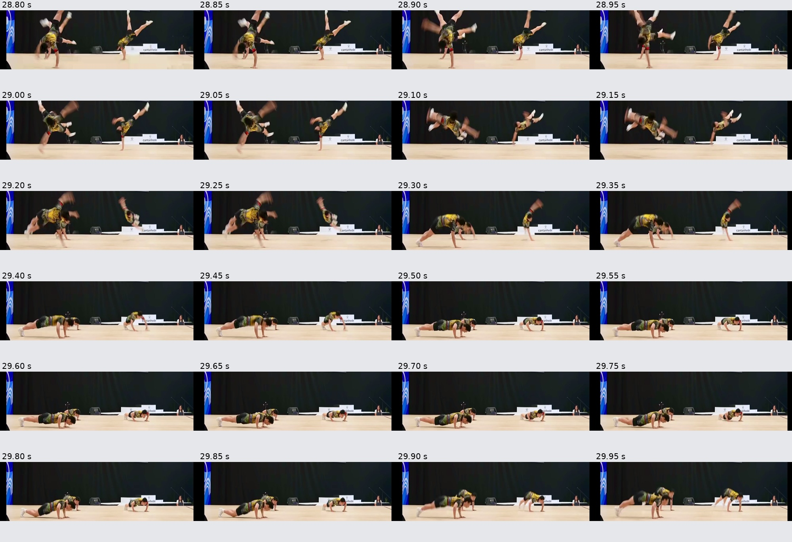
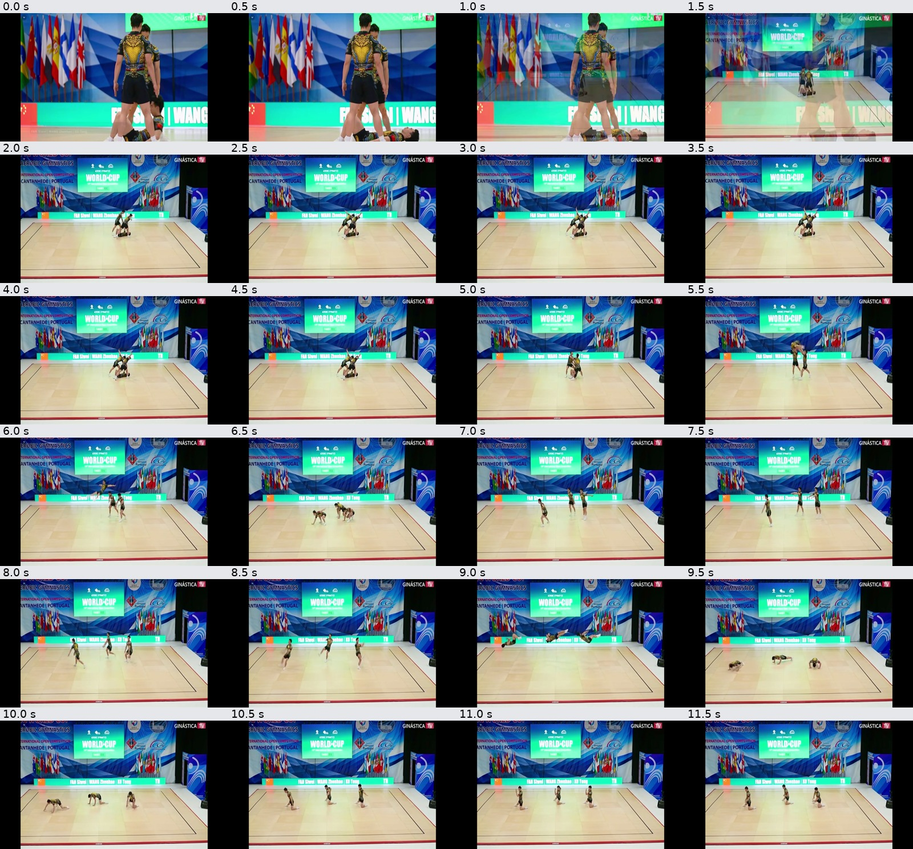
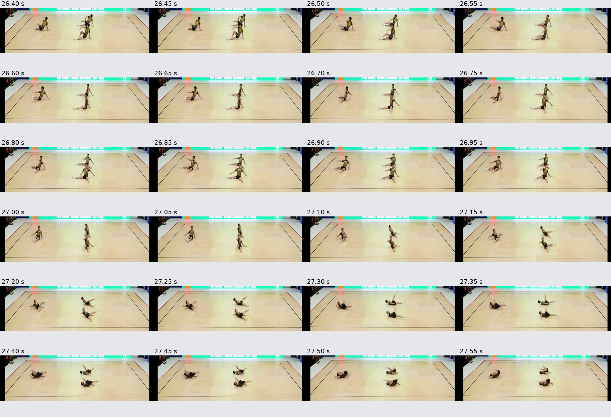
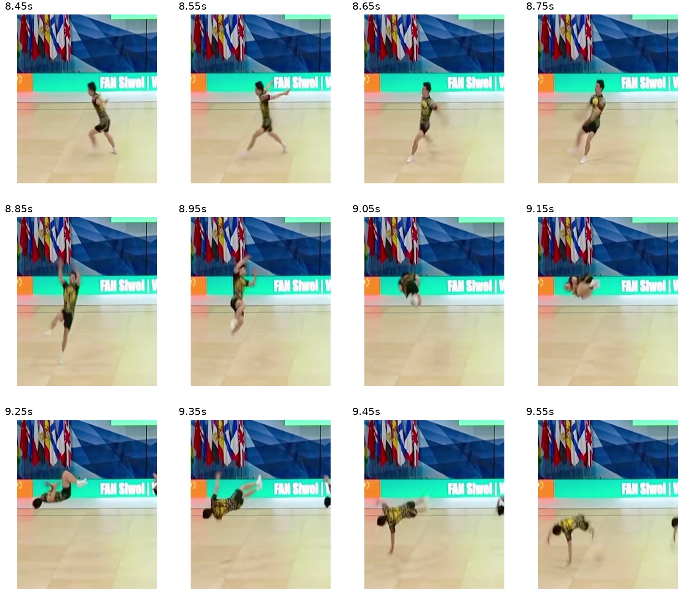

看清难度动作，写对每一个 FIG 编码
一段三人健美操视频和一本规则手册。Agent 要识别动作顺序、对应 FIG 难度代码与计分，交付可检查的难度动作表。
一、任务定义
委托场景：观看一整套三人健美操，识别难度动作的时序与技术变体，把动作对应到 FIG 编码，并判断能否获得相应难度分。
| 材料 / 验收 | 内容 |
|---|---|
| 视频 | 93.698 秒三人健美操 MOV，保留原始旋转元数据。展示预览另转为30fps，求解输入不变。 |
| 规则 | FIG Aerobic Gymnastics Code of Points 2025–2028 PDF，模型自行阅读、查图与对照动作。 |
| 交付 | difficulty_element_log.xlsx；按动作出现顺序填写4列：动作名、FIG代码、计分值、是否满足最低标准。 |
| 官方验收 | 表头正确、8行有效动作、总D分在7.0–7.2之间；8行 FIG_code 与 credited_value 按顺序全部匹配才得1。 |
展开实际题面与输入校验
展开运行环境、版本与评分口径
| 项目 | 实际条件 |
|---|---|
| 模型 / API | gpt-6.1-sol，NJU Link Responses；两题请求均为 xhigh，由 OTLP 核对。 |
| Agent / 桌面 | 官方 Codex CLI 0.163.0；自建 Ubuntu 22.04、XFCE、Xvfb 1024×768；4 CPU 等效配额、15 GiB。 |
| 联网与独立性 | 允许联网；历史两次使用直接bridge、未继承Windows代理。作答所用视频与规则均为本地输入，未下载外部作答材料。 |
| 材料版本 | 官方代码 2e91edd3cd26；数据 e9a2674a62f7；保留原始字节与哈希。 |
| 评分执行 | 固定版本官方确定性 workbook verifier；不使用视觉裁判，不提供部分分。 |
二、运行结果
修复用户代理后独立复跑 R2
| 运行 | 总分 | 评分状态 | 实际耗时 |
|---|---|---|---|
| 修复用户代理后独立复跑 R2 | 0 / 1 | 评分成功 | 36.95分钟（至有效评分） |
原流程起止（北京时间）：2026-11-04 01:39:18 至 2026-11-04 02:14:47；官方框架duration_s=2015.06。原始时区与计时口径完整保留。
沿用R1独立作答规则、模型、强度、官方评分和7200秒预算，新容器新上下文，修复用户代理通路，软件文件系统层不变。允许FIG通用规则，禁止本场现成动作答案；与最初运行的提示并非逐字节相同。原始两次运行和本轮均保留，网络条件分别标注，没有按高分挑选；首轮交付与分析保持原口径。
R2实际总计：7.1。事后匹配行：1、2、6；不匹配行：3、4、5、7、8。这些行级统计只作诊断，不是官方部分分。逐行诊断
保留历史R1 · 未接Windows代理 · 0/1
Windows端到端47分33秒，8行总计7.1，首差异仍在第3行；事后仅第1、2、8行匹配。全部素材来自本地输入，未检索本场现成答案；仍单列为未接用户代理的历史条件。
复跑可见轨迹 · 复跑状态与用量 · 实际计时 · 复跑全部交付
历史首轮 · 未接用户代理
| 运行 | 官方分数 | 评分状态 | 耗时 |
|---|---|---|---|
| Sol · xhigh · variant_1 | 0 / 1 | 作答完成 · 评分成功 | 框架21分22秒；流水线墙钟约21分47秒 |
| 检查 | 结果 |
|---|---|
| 文件 / 表头 / 行数 | 交付9,099字节；4列、8行，格式检查通过。 |
| 总 credited_value | 7.0，在规定7.0–7.2范围内。 |
| 首次不同 | A340 / 1.0（模型） vs A319 / 0.9（参考）。 |
| 官方原因 | ordered_match_failed；mismatch_index=3。 |
| 原始报告范围 | 首差异报告只说明前2行匹配、第3行首次失败；其他行的事后复核单列在下方。 |
展开实际交付表格（不改模型原件）
| 序号 | element_name | FIG_code | credited_value | meets_minimum_standard | 已知评分证据 |
|---|---|---|---|---|---|
| 1 | Off axis jump 1 1/2 twist to push-up | B469 | 0.9 | True | 事后复核匹配 |
| 2 | Straddle planche to lifted Wenson and back | A270 | 1.0 | True | 事后复核匹配 |
| 3 | Helicopter, 1/1 turn and 1/1 twist airborne to push-up | A340 | 1.0 | True | 事后复核不匹配 |
| 4 | Straddle cut 1/2 twist to push-up | A148 | 0.9 | True | 事后复核不匹配 |
| 5 | Flair 1/2 turn, 1/1 twist airborne to push-up | A309 | 0.9 | True | 事后复核不匹配 |
| 6 | 1/1 turn pike jump 1/2 twist to push-up | B589 | 0.9 | True | 事后复核匹配 |
| 7 | Explosive high-V 1/2 twist to push-up | A157 | 0.7 | True | 事后复核匹配 |
| 8 | 1/2 turn Cossack jump 1/2 twist to push-up | B557 | 0.7 | True | 事后复核不匹配 |
展开计时、用量与运行状态
流水线记录17:51:10–18:12:56（北京时间），约21分47秒；官方 duration_s 为1282.16秒（21分22秒），两者含不同的启动和收集开销。求解正常完成，评分成功。
输入5,128,197 token，缓存读取4,980,864，输出15,884。网关实际费用未知，不将框架 cost=0 解释为免费。
早先有一次 WSL 会话退出导致的启动中断，单独记为基础设施故障，不作为模型0分；本页主结果来自之后完成且评分成功的一次正式运行。
评分复核 · 2026-11-03
新旧官方verifier结果一致。参考表自测为1，原提交复测为0，单行代码改错也为0。事后逐行检查：第1、2、6、7行匹配，第3、4、5、8行不匹配。4/8仅作诊断，官方仍为0，不另造部分分。
旧案例Gemini 3.1 Pro Preview单次1.0与本次使用相同评分逻辑；旧页面缺少该次轨迹和交付XLSX，无法重新核验其过程。本次没有发现API故障或验证器异常导致0分。
首差异对应的是不同动作类型：参考第3行是FLAIR + AIR FLAIR，规则第70页为A319/0.9；模型填入的A340/1.0是第72页的HELICOPTER。视频28.8–29.3秒可见竖直分腿、交替手撑的阶段，为动作类型或整段划分混淆提供线索。此处是事后规则对照，不能替代体操专家逐动作复判。

完整复核说明与环境差异 · 实际运行目录源码与素材摘要核验 · 新旧源文件摘要对照
组织者在既有求解结束后审计，未把参考答案、旧输出或错误位置提供给复跑Agent。评分源码和素材对齐固定官方版本；自建镜像、模型与文档裁判有已披露差异，不声称与旧示例整机一致。
三、运行轨迹
从新容器与独立会话开始，自主分析输入、安装工具、制作交付并检查。下面保留可见回复、命令、输出、检索与桌面操作；看图数量由原始 OTLP 补核。
| 运行 | 完成命令记录 | 检索 / 打开 | view_image | 完整轨迹 |
|---|---|---|---|---|
| 健美操 · 正式运行 | 29 | 2 | 34 | 浏览命令与输出 → |
| 健美操 · 历史复跑R1（未接用户代理） | 63 | 1 | 37 | 浏览命令与输出 → |
| 健美操 · 修复用户代理后独立复跑 R2 | 48 | 3 | 35 | 浏览命令与输出 → |
CLI 命令记录与底层工具请求是两种计数口径，不能混加为推理轮数。原始 JSONL 没有可靠逐事件时间戳，浏览器按记录顺序排列；OTLP 看图单列。临时签名、凭据与本机用户路径已处理，不发布隐藏推理。
- 浏览整套动作：FFmpeg 抽取总览，制作每0.5秒一帧的联系表。
- 复看候选片段：对跳跃、支撑与地面转换制作局部高密度抽帧，结合规则截图判断旋转和技术变体。
- 写入表格：用 openpyxl 生成8行输出，核对表头、计分总和和文件可读性。

四、失败分析
修复代理后R2：有效作答，仍未完成全表匹配
本轮已使用用户正常代理，求解期间没有宿主挂载和评分参考；仅使用输入视频和FIG规则，未观察到现成答案检索。Agent修正了初始抽帧比例，并逐段细看后交付8行、总计7.1的XLSX。
官方评分仍为0/1，首个不匹配在第3行：A338/0.8（模型）对A319/0.9（参考）。A338是HELICOPTER腾空转体，参考为FLAIR + AIR FLAIR；不是表头、总分范围或浮点舍入问题。事后第1、2、6行匹配，其他5行不匹配，3/8只作诊断。该结果不能说明所有动作都没识别对，也没有证据把它解释为API或评分器故障。
三次完整求解都保留：首轮4/8行匹配、历史R1为3/8、代理修复R2为3/8，官方分数均为0。没有按高分选择运行，也没有把行匹配率改成官方部分分。下面保留首轮的具体交付分析，旧网络条件已单列。
历史首轮 · 未接用户代理
1. 格式做对，动作编码没有全部匹配
模型完成了文件生成、8行格式和总分范围要求。真正使本题失分的是第3行的动作代码与计分值不符，确定性评分器因此返回0。
| 第3行 | FIG代码 | 计分值 | 证据边界 |
|---|---|---|---|
| 模型提交 | A340 | 1.0 | 动作名写作 Helicopter, 1/1 turn and 1/1 twist airborne to push-up。 |
| 参考报告 | A319 | 0.9 | 只披露首处差异，不是对其余所有动作的人工复判。 |
2. 难点在动作变体与规则条目的绑定
轨迹显示模型多次复看空中旋转、身体姿态和支撑转换，并阅读规则图，说明它尝试做细粒度判断。最终代码仍未匹配，工具调用和抽帧数量本身不能保证技术动作识别正确。


3. 0/1 总分无法描述全部识别质量
只要任意一行代码或计分值不符就得0。原始报告只返回首次差异；新增事后复核确认第1、2、6、7行匹配，第3、4、5、8行不匹配。4/8不是官方部分分，也不等于经过人工逐动作复判的识别准确率。
验证器要求 element_name 与 meets_minimum_standard 两列存在，但逐行比较的是 FIG_code 与 credited_value；这次通过格式检查不代表另外两列的语义经过了独立验证。
4. 可以支持的结论与仍未验证的解释
可支持的结论是“模型未完成8个编码与计分的顺序全匹配”。动作边界、转体数、技术变体或最低标准判断都可能影响编码，但没有逐动作人工复判或控制实验，不能把某个具体视觉误判写成已证实的唯一原因。
文件与来源
- 原始交付 XLSX · 交付包
- 官方首差异报告 · 运行、用量与退出状态
- 实际题面 · 材料版本、来源与哈希
- 可见轨迹 JSON · 交互轨迹浏览器
确定性评分源码：固定版本 verify_outputs.py。